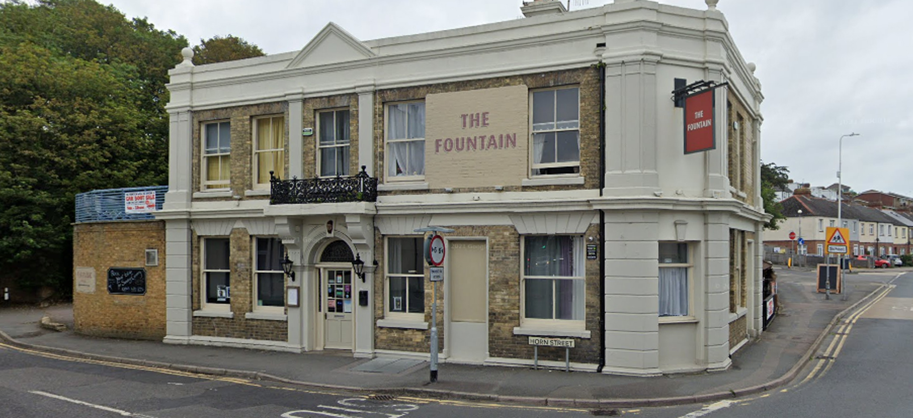
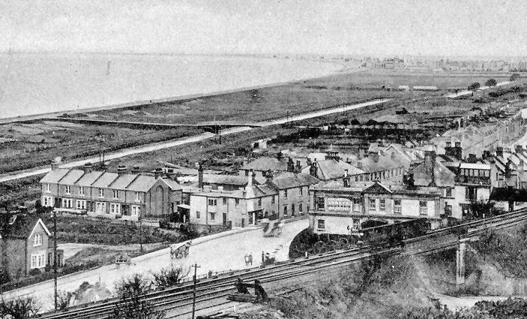
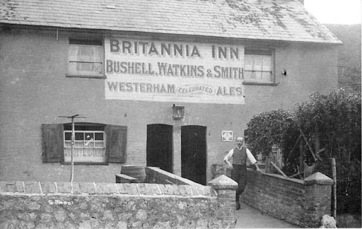
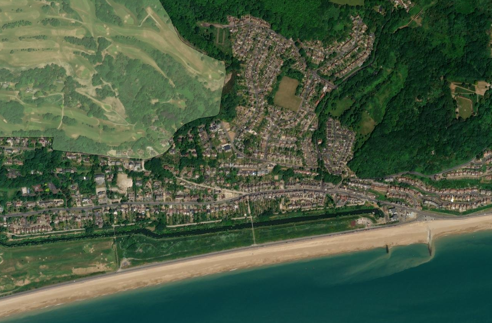
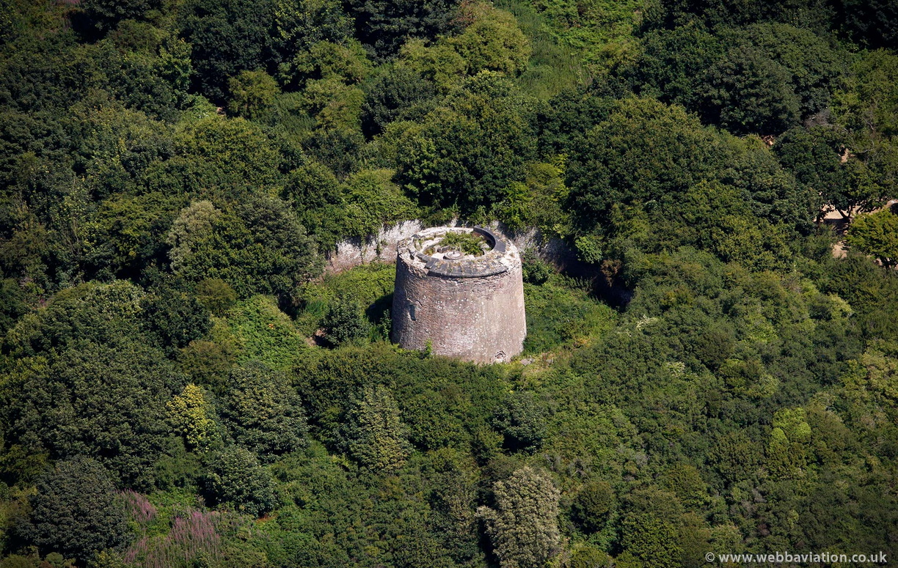
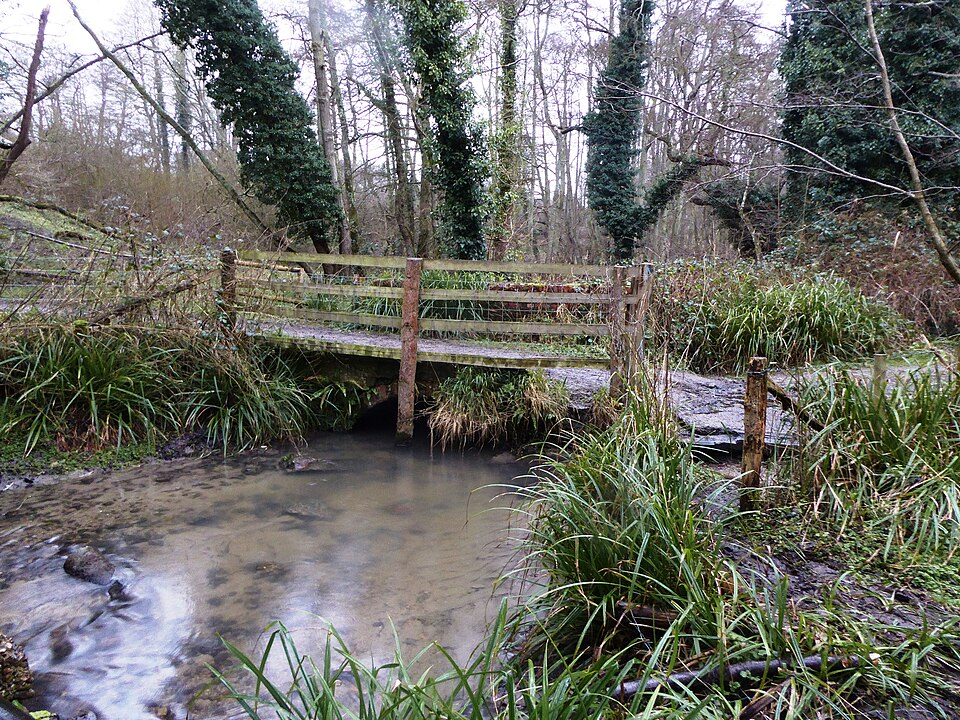

Places of Interest
The Fountain
Nestled on the junction of Seabrook Road and Horn Street and with the brook running through the property you don't get much more central than The Fountain. At the heart of our village, The Fountain (also known as the Fountain Hotel) is one of Seabrook’s most beloved landmarks. The building dates from 1888 when rebuilt by Lenny's, it is standing on the site of a much earlier inn, and today it still exudes charm with its light, airy bar, traditional décor, and welcoming atmosphere.
Inside, you’ll find a warm and friendly pub where locals and visitors alike gather to enjoy real ales, good company, and hearty, old-fashioned pub grub using locally sourced ingredients.
The Seapoint Canoe Centre

Located on Princes Parade in Seabrook, Seapoint Canoe Centre has long provided kayaks, canoes and paddle-boards for hire and instruction on the adjoining Royal Military Canal and sea, making it a key entry point for watersports in the area.
Seapoint Canoe Centre operates as a community-focused watersports hub, offering supervised sessions, skills training and equipment hire suitable for beginners through to confident paddlers. Its sheltered position makes it an ideal starting point for exploring the Royal Military Canal at a gentle pace, while more experienced users can take advantage of sea conditions along the adjacent coastline when weather allows. Over the years it has become a familiar landmark for outdoor activity in Seabrook, providing safe access to the water and encouraging residents and visitors to engage with the natural landscape through practical, hands-on recreation.
The Britannia

The Britannia Inn on Horn Street has its origins in the late 18th century, when two adjoining cottages were adapted into licensed premises serving the small but growing settlement of Seabrook. Early references show the building operating as a beerhouse before becoming a fully recognised inn during the 19th century. Its position near the base of Horn Street made it a natural stopping point for labourers, travellers, and local fishermen moving between the valley, the canal, and the seafront. Over time, alterations to the façade and internal layout reflected both the changing needs of the village and the gradual shift from cottage industry to a more structured local economy.
By the late Victorian period, the Britannia had become a well-established feature of Seabrook life, appearing in local directories and licensing records. It served not only as a drinking place but as a community point of contact in an area that otherwise had few public buildings. The inn’s long history offers a clear view into how small coastal settlements functioned before the modern era—built environment adapting slowly, buildings repurposed rather than replaced, and local inns playing a practical role in the daily rhythm of rural and maritime work..
Kent Downs & Paraker Wood

The Kent Downs National Landscape (formerly the Kent Downs AONB) begins its rise directly behind Seabrook, where the coastal plain gives way to the first slopes of the North Downs. In this part of the village, the boundary meets settlement at Cliff Road, Naildown Road and Spring Lane, marking the point where residential streets transition into chalk woodland, open grassland and the wider Downland ridge. The change in elevation is immediate and historically significant: this steep valley side formed a natural barrier above the Seabrook stream and shaped early land use, settlement patterns, and agricultural practices long before modern development arrived.
From these access points, the landscape quickly shifts into characteristic Downs scenery — ancient woodland, chalk escarpments, species-rich grassland and long views over the Channel and the Seabrook valley. These slopes are among the closest parts of the Kent Downs to the sea, creating a compact but striking meeting of coastal and downland environments. For Seabrook residents, Cliff Road, Naildown Road and Spring Lane act as informal gateways into the protected landscape, offering immediate access to footpaths, wildlife habitats and the wider network of trails that connect with the North Downs Way and surrounding countryside.
Royal Military Canal

The Royal Military Canal begins at Seabrook, where construction first started in 1804 during the Napoleonic Wars. This western terminus marked the point where engineers began cutting the 28-mile defensive line intended to slow a potential French invasion. The canal’s alignment at Seabrook was carefully chosen: the narrow coastal plain here formed a natural choke point between the sea and the rising Downs, making it an ideal location to anchor the defensive system. Remains of the early works and documentary records show how the canal was dug in sections, with military labour and civilian contractors working side by side to shape what was then one of the largest engineering projects in Britain.
Today the Seabrook end of the canal still shows its original profile—a broad waterway with a military towpath and raised bank, built to hold troops, control movement, and provide lines of fire. While the defensive purpose has long passed, this stretch retains its historic character and offers one of the clearest views of how the canal was intended to function.

The Martello Tower
The Martello Tower at Seabrook is part of the early 19th-century chain of small circular forts built along the south-east coast during the Napoleonic Wars. Designed to withstand artillery fire and to operate with a small garrison, these towers formed a defensive line intended to slow or deter any attempted French landing between Folkestone and Rye. The Seabrook tower sits on the lower slopes of the valley close to the start of the Royal Military Canal, reflecting the strategic pairing of elevated lookout points with the inland waterway as part of a coordinated defence system. Its thick brick walls, elevated entry, and rooftop gun platform follow the typical design features seen across the surviving towers.
Although its military purpose was short-lived, the Seabrook Martello Tower remains a significant historic structure within the local landscape. Over the 19th and 20th centuries, many towers along the coast were adapted, reused, or partially altered, but their original defensive form remains clearly recognisable. Today the Seabrook tower stands as a key piece of the area’s military heritage, illustrating how national defence priorities shaped the coastline during a period of intense international tension. As a protected monument, it contributes to the wider understanding of the Napoleonic fortifications that once defined this stretch of Kent.
Seabrook Stream
The Seabrook Stream, designated a Site of Special Scientific Interest (SSSI) in 1987, is one of the most ecologically important valleys in Kent. Rising in a wooded chalk valley below the North Downs, the stream crosses Gault Clay before cutting into the Lower Greensand, creating a sequence of springlines and seepages along its course. This varied geology produces a remarkable mosaic of habitats—from dry sandy slopes to saturated peat and fen on the valley floor—supporting extensive alder carr, reedswamp, and species-rich flushes. These wetland communities host plants such as opposite-leaved golden saxifrage, marsh marigold, yellow flag iris, great horsetail, and common valerian, forming one of the most distinctive natural environments in the Seabrook area.
The valley is nationally significant for its invertebrate life, with 67 species of cranefly recorded, including four nationally scarce species such as Erioptera limbata, known from only two other British sites. The combination of wet alder woodland, open flushes, reedswamp, and drier grassland also supports a diverse range of caddis flies, lacewings, harvestmen, and breeding birds including reed and sedge warblers, grey wagtails, and a notable colony of sand martins in the western quarry. This intricate arrangement of habitats, maintained by natural seepages and the stream’s gradient, makes the Seabrook Stream one of Kent’s most important refuges for wetland and woodland wildlife, as well as a key feature of the historic Seabrook valley landscape.
King Charles III Coastal Path

The South East portion of the Kings Charles III England Coast Path threads through Kent’s coastal stretch, offering walkers direct access to the seaside from village to cliffs. Starting from the wider region it passes through Seabrook and adjacent coastal zones, where the path transitions from the built-village environment into more expansive, natural shoreline and canal-valley landscapes. The route is part of a larger vision—once fully completed, the trail will span over 300 miles (496 km) in the South East.
Within the Seabrook area in particular, the path navigates beside the shore, meandering past the valley of the brook, along the wide views of the English Channel, and skirts the edge of the Kent Downs where the coastal plain meets rising chalk slopes. Here, walkers benefit from a rich mix of environments: from seaside promenade or shingle beach, through waterways and green corridors, and up towards downland heritage. The trail provides a continuous public right-of-way intended to link community, nature and coast and is actively marked and promoted by the National Trails organisation.